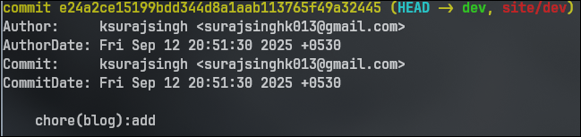
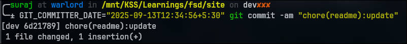
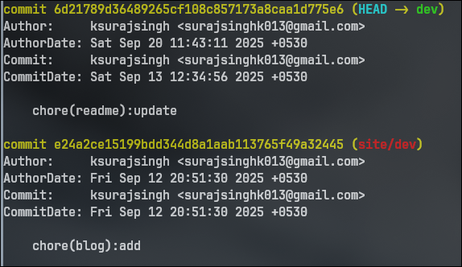

Isn't hacking just doing something which people didn't know could be done.
Or people didn't thought could be done.
Or doing something that was not intended to be done in that field by its creators / users.
I came across GIT_COMMITTER_DATE.
Which represents when the commit was actually made.
When you use --date it updates the date which represents originally creation.
Now this also helped me understand more on - "how important environment variables are".
So its is obviously not necessary to use a System which has the files that you are committing right.
You can always ssh and there are other protocols , idk . Telnet is something I want to learn.
When you ssh you get the env variables [NOT ALL] which also includes the GIT_COMMITTER_DATE which gives the commit one of its metadata attributes -
DATE which is what shows up in your contribution graph .
Now using this I will make a few commits today on 2025-09-20 but my graph which was empty from 2025-09-13 will be greenished.
P.S: BTW , it follows a 24 hour-format by default atleast for me.

GIT_COMMITTER_DATE

COMMIT_DATE preceds its author date, itself is quite counter-intuitive.
Which is what I see as a hack. A pretty small one, but surely one.